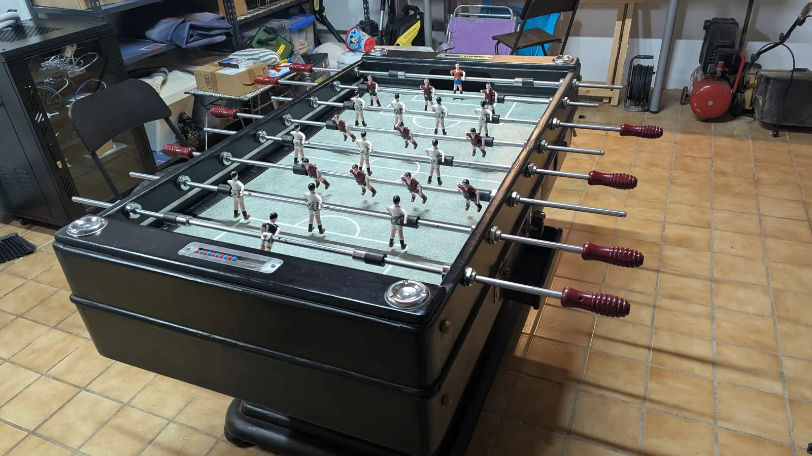
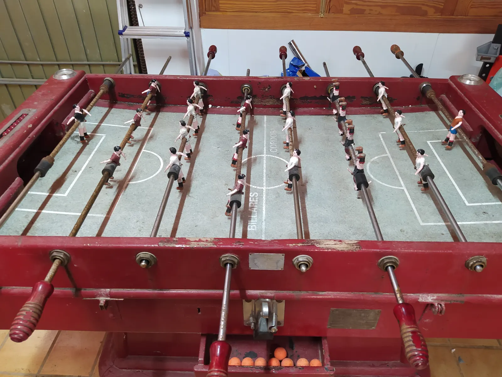
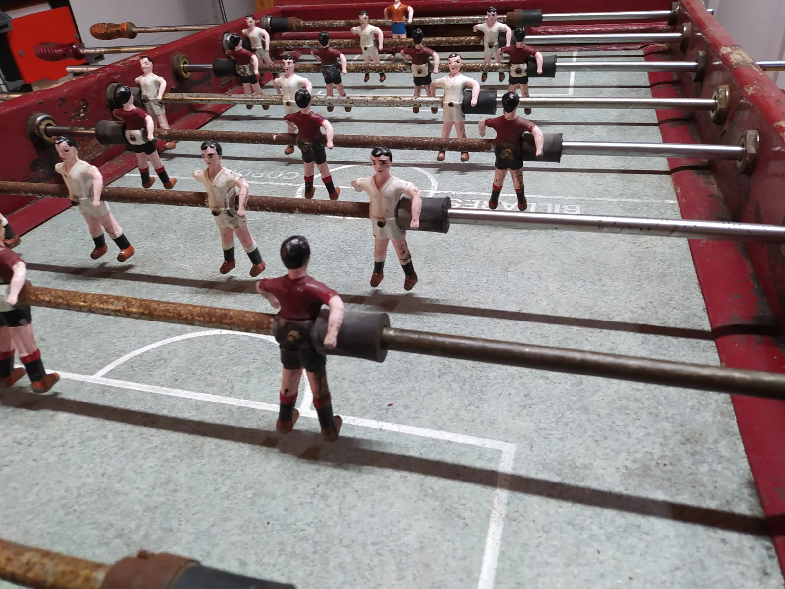

02
A classic Córdoba
It's an old Córdoba foosball table, black and restored. That set the rules for the build:
- Same as ever on the outside. No screens stuck on, no new buttons. The only visible thing is a main switch underneath.
- The goals stay untouched. The ball is solid and flies in: any sensor inside the goal would end up broken or bouncing the ball back onto the pitch.
- No cables while playing. Everything runs on batteries.
- No buttons on the table. Everything is controlled from Home Assistant.
The abacus with red and blue beads is still in its place, just in case.



